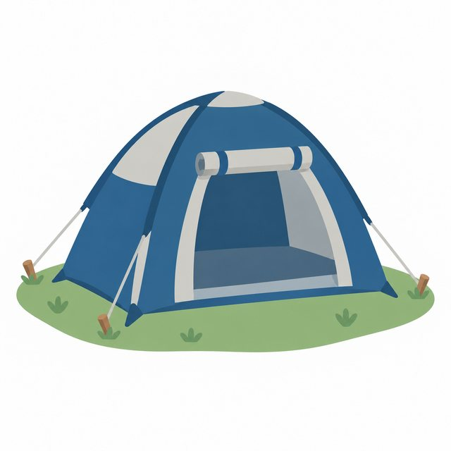
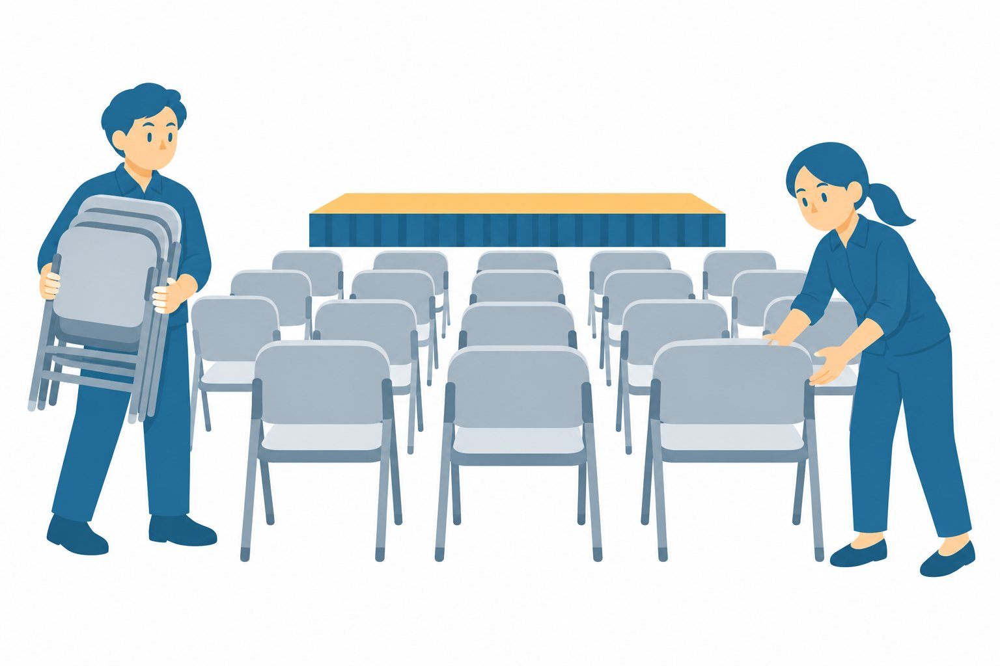

素材をさがす ／ 社内イベント ／ 社内
会場のしたく
社内イベント社内場面
この絵について
2人の社員が、折りたたみ椅子を運んで並べる場面のイラストです。
使い方の例
準備の係の案内に使えます。
この絵について要望を送る生成AIのイラストレーターが描き、AIの検品役が確かめた絵です。

素材をさがす ／ 社内イベント ／ 社内
2人の社員が、折りたたみ椅子を運んで並べる場面のイラストです。
準備の係の案内に使えます。
この絵について要望を送る生成AIのイラストレーターが描き、AIの検品役が確かめた絵です。